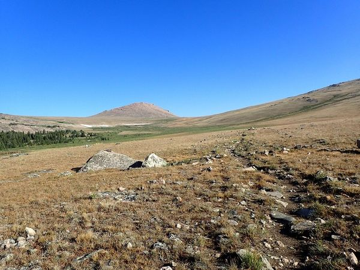

Gannet Peak - Day 8 - Visiting the Bomber Wreck The last day of the the trip I hiked to the wreck of a B-24 that had crashed while on a training mission during the Second World War. Gannet Peak Trip
 Gannet Peak - Day 7 - Over the Top Just before treeline, I passed two parties, the first making noise with their bear bells and carrying bear spray, while the in the second, they all had large revolvers. It was quite an interesting contrast. Gannet Peak Trip
Gannet Peak - Day 6 - Out of the Canyon On the morning of day 6, I woke up early, packed my gear and headed down the trail without breakfast, because I wanted to get out ahead of the snowmelt. Gannet Peak Trip
Gannet Peak - Day 5 - The Ascent Once at the summit I found the summit register and stopped to take photos. I could see all of the ways to the Tetons, while to the south the mountain peaks stretched into the far distance. Gannet Peak Trip Peak Ascents
Gannet Peak - Day 4 - Getting to Base Camp On Day 4 I woke up, had breakfast and began heading up the trail once more. I had one serious creek crossing that made me glad that I had gotten up early and not waited till the snow melt made it much worse. Gannet Peak Trip
Gannet Peak - Day 3 - Back on Track Since I had gotten lost on Day 2, most of day three was spend retracing my steps and getting back on the right path. Gannet Peak Trip
Gannet Peak - Day 2 - Wrong Turn When I woke up, it was overcast and grey and just barely drizzling. Fortunately, unlike some of my other adventures, I had stayed dry throughout the night. Gannet Peak Trip
Gannet Peak - Day 1 - Beginning In the summer of 2016 I decided that I wanted to climb Gannet Peak, the highest point in Wyoming and the most remote of all of the state high points. Gannet Peak Trip